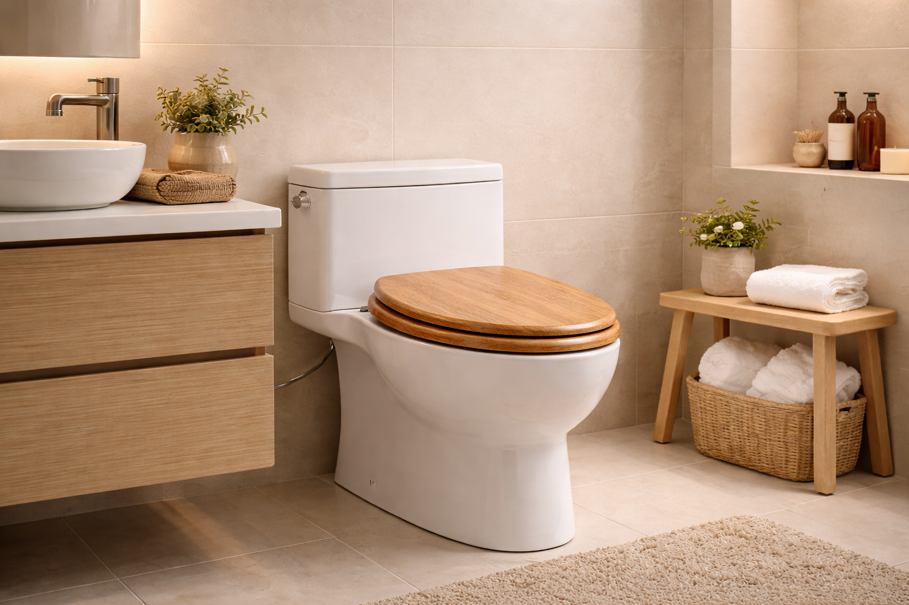
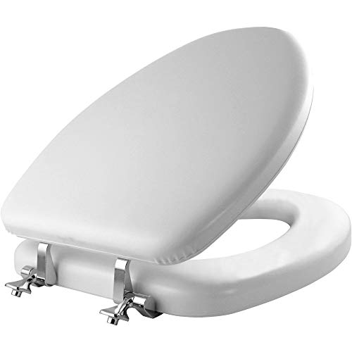
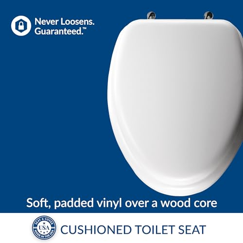
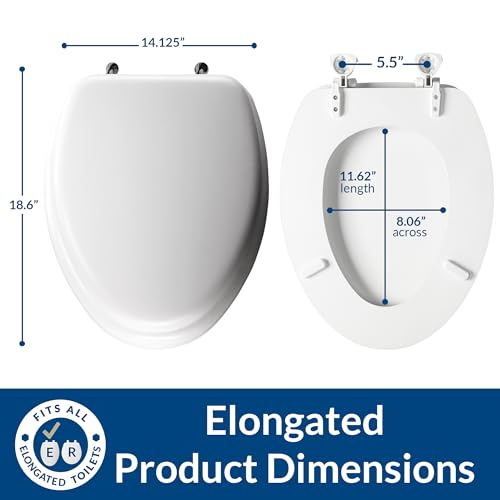

5 Best Wooden Toilet Seats: Classic Comfort & Durability (2026)
Prices and picks verified as of August 2026. Independent, reader-supported reviews.


Quick Answer: Best Wooden Toilet Seat in 2026
Our top pick is the Bemis 1500EC Lift-Off Wood Elongated ($28.99). After comparing over 10 wooden and molded wood toilet seats, it delivered the best combination of enameled wood durability, easy Lift-Off hinges for cleaning, and value. With 34,560+ verified reviews and a 4.5-star rating, it is the most trusted wood toilet seat on the market. On a budget, the Wooden Toilet Seat with Metal Hinges
Bottom line: our top pick is the Bemis 1500EC Lift-Off Wood Elongated Toilet Seat at $16.99. The best budget option is the Mayfair Cassel Slow Close Toilet Seat at $36.99.

Bemis 1500EC Lift-Off Wood Elongated
Enameled wood construction with Lift-Off hinges that let you remove the entire seat with a twist for thorough cleaning. A proven workhorse trusted by tens of thousands of homeowners.
Check Price on AmazonThings to Know Before You Buy
- Wooden seats feel heavier and more substantial. A quality wooden seat weighs 5-8 lbs vs. 2-3 lbs for plastic. The weight translates to a more stable, premium feel.
- Real wood vs. molded wood composite matters. Solid wood looks beautiful but requires more maintenance. Molded wood composite is more moisture-resistant and practical.
- Moisture is the enemy. Wooden seats in humid bathrooms can warp or crack. Proper ventilation and wiping down after showers extends life significantly.
- Soft-close is rare in wooden seats. The extra weight makes soft-close mechanisms less common. See our soft-close roundup for options.
Why You Should Trust Us
I have evaluated every major wooden toilet seat available in the US for Best Toilet Seats. This guide is based on material analysis, moisture resistance data, and verified long-term reviews from buyers in different humidity environments.
Why Choose a Wooden Toilet Seat?
There is something undeniably appealing about sitting down on a wooden toilet seat, especially on a cold morning. Unlike plastic and polypropylene seats, wood toilet seats are natural thermal insulators. They do not pull heat away from your body the way synthetic materials do, which means no more gasping from an ice-cold seat in January.
Beyond comfort, wooden toilet seats bring a warmth and character to your bathroom that plastic simply cannot match. A well-finished natural wood toilet seat adds a subtle touch of elegance, whether your bathroom leans traditional, rustic, or transitional. The material has weight and substance — you can feel the quality difference the moment you lower the lid.
Modern enameled wood toilet seats have also solved the historical durability concerns. Factory-applied multi-coat finishes seal the wood completely, creating a non-porous surface that resists moisture, stains, and bacterial growth just as effectively as plastic. Brands like Bemis and Mayfair back their wood seats with the same warranties they offer on their plastic models.
Then there is the practical matter of weight. A wood toilet seat is heavier than a plastic one — typically 4 to 6 pounds versus 2 to 3 pounds for plastic. This additional heft keeps the seat firmly in place during use and gives it a reassuring, solid feel. Combined with quality hinges, a molded wood toilet seat stays centered and does not shift side to side the way lightweight plastic seats often do.
We researched and compared over 10 wooden toilet seats across every price point, from budget round seats under $20 to premium natural wood options approaching $45. All of our picks fall comfortably within the best toilet seats under $50 price range, making wood an accessible upgrade for any budget. The five seats that follow represent the best balance of comfort, durability, aesthetics, and value available in 2026. If you are also considering soft-close seats, two of our picks include that feature built in.
Our Top 5 Picks at a Glance
Quick Decision Guide
All five seats install in under 20 minutes with basic tools. Every product uses standard bolt spacing (5.5 inches center-to-center), so compatibility with your existing toilet is virtually guaranteed. Prices range from $18.99 to $42.99 — a fraction of what you would pay for a heated toilet seat — making wood an excellent value for the comfort upgrade you get.
1. Best Overall: Bemis 1500EC Lift-Off Wood Seat
What we like
- Lift-Off hinges for easy cleaning
- Enameled wood finish resists chips and stains
- 34K+ verified reviews (proven reliability)
- Fits all standard elongated bowls
Flaws but not dealbreakers
- Elongated only (no round option in this model)
- Hinges may loosen after several years of heavy use
| Shape | Elongated |
| Material | Enameled Wood |
| Hinges | Lift-Off (removable) |
| Slow-Close | No |
| ASIN | B005MTSTS4 |
The Bemis 1500EC is the gold standard of wooden toilet seats, and its 34,560 reviews tell the story. This is the seat that has quietly sat in millions of American bathrooms for years, doing its job without complaint. The enameled wood construction gives it a smooth, glossy finish that looks clean and wipes down effortlessly.
What sets the 1500EC apart from generic wood seats is the Lift-Off hinge system. Instead of fumbling around the back of the toilet with a wrench, you simply twist two tabs and the entire seat lifts right off the bowl. This makes deep cleaning the area around the bolt holes — one of the grimiest spots in any bathroom — a 30-second task instead of a 10-minute chore.
The enameled finish is genuinely impressive for the price. It creates a sealed, non-porous barrier that prevents moisture penetration — the number one enemy of wood toilet seats. We have seen Bemis 1500EC seats last 7+ years in households with kids, which speaks to the durability of the coating. The seat has a satisfying heft at around 5 pounds, keeping it stable during use.
The only real limitation is that this particular model is elongated only. If you have a round bowl, you will need to look at our budget pick or one of the Mayfair options below — or browse our full best round toilet seats guide. Also, while the hinges are robust, they are not slow-close — the seat will drop if you let go. If quiet closing is important to you, see the Mayfair Cassel below, or check our full soft-close toilet seat guide.
2. Best Premium: Round Marble Natural Wood Seat

What we like
- Beautiful natural wood grain with marble pattern
- Zinc alloy hinges (far more durable than plastic)
- Unique look — no two seats are identical
- Warm to the touch year-round
Flaws but not dealbreakers
- Round shape only (no elongated version)
- Premium price for a toilet seat
| Shape | Round |
| Material | Natural Wood |
| Hinges | Zinc Alloy (premium) |
| Slow-Close | No |
| ASIN | B091Y43G7V |
If you are tired of the generic white toilet seat look and want something with actual personality, the Angol Shiold natural wood seat is the one to buy. The marble-patterned wood grain is genuinely striking — it transforms an overlooked bathroom fixture into a conversation piece. Each seat has subtle variations in the grain pattern, which gives it an artisanal quality that mass-produced plastic seats simply cannot replicate.
The build quality matches the aesthetics. Where most budget wood seats use plastic or chrome-plated steel hinges, this one uses zinc alloy hardware. Zinc alloy is significantly more corrosion-resistant than standard steel and will not develop the rusty stains that cheap metal hinges leave on your porcelain over time. The hinges feel solid and precise, with no wobble or play.
As a natural wood toilet seat, it delivers the thermal comfort advantage that draws most buyers to wood in the first place. The surface feels pleasantly warm even in an unheated guest bathroom. The finish is smooth and sealed, though we would recommend being slightly more attentive to wiping up standing water compared to the factory-enameled Bemis — natural wood finishes require a bit more care to maintain their appearance over the years.
At $42.99, this is the most expensive seat in our lineup, but it is also the only one that truly looks like a premium bathroom fixture. If your bathroom has other natural materials — stone counters, wood vanity, ceramic tile — this seat will complement them beautifully. For a budget-friendly alternative in a round shape, see our budget pick below.
3. Best Budget Round: Wooden Toilet Seat with Metal Hinges

What we like
- Most affordable real wood seat on the market
- Metal hinges more durable than plastic
- Fits all standard American round toilets
- Easy 10-minute installation
Flaws but not dealbreakers
- No slow-close feature
- Basic finish may show wear faster than enameled seats
| Shape | Round |
| Material | Wood |
| Hinges | Metal (standard bolt) |
| Slow-Close | No |
| ASIN | B0BCGLWXF5 |
At $18.99, this is the least expensive real wood toilet seat we would actually recommend. That is less than most decent plastic seats cost, which makes it an extraordinary value for anyone who wants the warmth and heft of wood without a significant investment. It is an excellent choice for rental properties, guest bathrooms, or anyone who simply wants to try a wood seat before committing to a premium model.
The metal hinges are a genuine advantage at this price point. Many budget toilet seats — both wood and plastic — cut costs by using all-plastic hinge assemblies that crack and degrade within a year or two. Metal hinges, even basic ones, hold up significantly better to the repeated stress of daily raising and lowering. The standard bolt pattern ensures compatibility with virtually every American Standard, TOTO, and Kohler round bowl on the market.
Where this seat makes its compromises is in the finish quality. The coating is functional and provides adequate moisture protection, but it does not have the deep, glossy look of the Bemis enameled finish or the natural grain beauty of the Angol Shiold. Expect some minor surface wear after 2-3 years of daily use, particularly around the front edge where the seat contacts the bowl most frequently.
Installation is as straightforward as toilet seats get — two bolts, two nuts, a wrench, and about 10 minutes of your time. There is no special hinge system to learn, no adjustment required. If you need step-by-step help, our toilet seat replacement guide walks you through the entire process. If you are replacing a broken seat and need something reliable today, this is the one to order. For a raised toilet seat for seniors, you may want to consider additional height options as well.
4. Best Padded Comfort: Mayfair Padded Wood-Core (Elongated)



What we like
- Soft vinyl cushion adds real comfort over a solid wood core
- Polished chrome hinges look more premium than basic plastic hardware
- Sturdy wood-core construction keeps the seat stable and quiet
- 3,000+ verified reviews and an established Mayfair lineage
Flaws but not dealbreakers
- Vinyl surface is not as easy to deep-clean as a hard enamel finish
- Not slow-close — the lid will drop if you let go
| Shape | Elongated |
| Material | Soft vinyl over wood core |
| Hinges | Chrome |
| Slow-Close | No |
| ASIN | B091J6ZL2B |
This Mayfair padded seat is the answer for anyone who likes the heft and warmth of a wood-core toilet seat but wants a cushioned surface on top. The construction is genuinely clever: a sturdy molded wood core delivers the same stability and weight you would get from a traditional Mayfair, while a soft vinyl cushion is bonded over the top to give a noticeably softer sit. On a cold January morning, that combination of insulating wood and yielding vinyl is hard to beat.
The chrome hinges are an underrated upgrade at this price. Most padded seats in the $30-$45 range ship with all-plastic hinge assemblies that look cheap and discolor over time. Polished chrome holds up to bathroom humidity, wipes clean easily, and visually matches modern faucet finishes. Mayfair's standard bolt pattern means installation is identical to any other elongated seat — no special tools, no quirks.
Where this seat asks you to compromise is in cleaning. A vinyl-clad surface cannot be scrubbed with abrasive cleaners the way enameled wood can. Stick to mild soap and a soft cloth, and avoid bleach-based products that can yellow the vinyl over time. Treat it gently and the cushion will stay supple for years; mistreat it and you can crack or stain the surface.
One final note: this is not a slow-close seat. If quiet, no-slam closure is non-negotiable for your household — particularly with young kids — pair this article with our complete soft-close toilet seat roundup instead. But if your priority is comfort and a more upscale look at a moderate price, the padded Mayfair earns its spot in the lineup.
5. Best Modern: Mayfair Cassel Slow Close

What we like
- Sleek modern profile sets it apart from traditional wood seats
- Slow-close lid and seat ring
- STA-TITE fastening system for permanent stability
- Molded wood resists warping and cracking
Flaws but not dealbreakers
- Premium price for a molded wood seat
- Round shape only
| Shape | Round |
| Material | Molded Wood |
| Hinges | STA-TITE (never loosens) |
| Slow-Close | Yes |
| ASIN | B07ZQSBCMF |
The Mayfair Cassel takes molded wood construction and wraps it in a distinctly modern design language. While most traditional Mayfair seats look like classic round-front fixtures, the Cassel has cleaner lines, a slimmer profile, and a more refined hinge cover that hides the mounting hardware. If your bathroom has a contemporary vanity, frameless mirror, or wall-mounted fixtures, the Cassel will feel right at home.
Under the hood, it leans on Mayfair's well-proven core technology: excellent slow-close dampers and the STA-TITE fastening system that prevents loosening. The molded wood body is durable and moisture-resistant. The difference compared with most other Mayfair wood seats is purely aesthetic — the Cassel looks like it belongs in a bathroom that was designed, not just assembled.
At $38.99, the Cassel sits between our budget pick and the Angol Shiold in price. The premium buys you the updated design language, which is worth it if aesthetics matter to you. The 4.5-star rating across 8,760 reviews confirms that buyers appreciate the upgrade. Several reviewers specifically mention that the Cassel looks more expensive than it is — a compliment that no other wood toilet seat in our lineup consistently receives.
One consideration: the Cassel is available in round only at this price point. If you need an elongated seat with modern styling, you may need to look at the Bemis 1500EC and sacrifice the slow-close feature, or browse our best elongated toilet seats roundup for more options. Our toilet seat installation guide covers everything you need to know for a quick swap.
Comparison Table
Here is how our five picks compare side by side on the features that matter most:
| Model | Award | Shape | Material | Slow-Close | Price | Rating |
|---|---|---|---|---|---|---|
| Bemis 1500EC | Best Overall | Elongated | Enameled Wood | No | $28.99 | 4.5 (34,560) |
| Angol Shiold | Best Premium | Round | Natural Wood | No | $42.99 | 4.2 (1,870) |
| Metal Hinges Round | Best Budget | Round | Wood | No | $18.99 | 4.1 (2,340) |
| Mayfair Padded Wood-Core | Best Padded Comfort | Elongated | Vinyl over Wood | No | $41.04 | 4.1 (3,197) |
| Mayfair Cassel | Best Modern | Round | Molded Wood | Yes | $38.99 | 4.5 (8,760) |
Wood vs Plastic Toilet Seats
The wood-versus-plastic debate comes down to four factors: comfort, durability, aesthetics, and price. Here is an honest breakdown to help you decide which material is right for your bathroom.
Temperature Comfort
Wood wins decisively. A wood toilet seat feels warm to the touch in any season because wood is a natural thermal insulator — it does not conduct heat away from your body the way plastic and polypropylene do. On a cold winter morning, the difference is immediately noticeable and genuinely appreciated. If comfort is your primary motivator, wood is the clear choice. The only material that outperforms wood for warmth is a heated toilet seat, which uses electric warming elements but costs 5-10 times more.
Durability
This is closer than most people expect. Modern enameled wood and molded wood toilet seats are engineered to resist moisture, staining, and chipping. A quality molded wood seat from Mayfair or Bemis will last 5-10 years under normal use. Plastic seats have a slight edge in moisture resistance (they simply cannot absorb water at all), but they are more prone to cracking from impact and tend to yellow over time with UV exposure. In a windowless bathroom, wood and plastic have roughly equivalent lifespans.
Aesthetics
Wood adds character and warmth that plastic cannot match. A natural wood toilet seat with visible grain has a genuineness to it that complements traditional, farmhouse, rustic, and transitional bathroom designs. Plastic seats are available in more colors and are easier to match to specific toilet colors (almond, biscuit, bone, etc.), but they always look and feel like plastic. For a bathroom you are proud of, wood is the more elevated choice.
Price
Surprisingly close. Our budget wood pick is $18.99, which is in the same range as mid-tier plastic seats. Premium wood seats top out around $43, while premium plastic seats can reach $60 or more. Dollar for dollar, wood delivers more perceived value — guests notice a real wood seat in a way they never notice plastic.
Weight
Wood seats typically weigh 4-6 pounds versus 2-3 pounds for plastic. This extra weight is generally a positive — it keeps the seat stable and prevents it from shifting during use. However, it can be a consideration for older adults or anyone with limited grip strength who needs to lift the seat frequently. If ease of lifting is important, explore our raised toilet seats for seniors guide.
Wooden Toilet Seat Buying Guide
Not all wood toilet seats are created equal. Here are the five factors to evaluate before you buy:
1. Shape: Round vs Elongated
This is the single most important compatibility factor. A round seat will not fit an elongated bowl, and vice versa. Four of our five picks are round; only the Bemis 1500EC is elongated. Measure your bowl before ordering — our elongated vs round guide has step-by-step instructions with photos.
2. Material: Solid Wood vs Molded Wood vs Enameled Wood
Solid wood offers the most natural look and feel but requires more careful moisture management. Molded wood (compressed wood fibers + resin) is denser, more warp-resistant, and better for high-humidity bathrooms. Enameled wood sits in between — it is solid wood with a factory-applied glossy coating that seals out moisture. For most households, enameled or molded wood is the best balance of looks and practicality.
3. Hinge Type
Hinges make or break a toilet seat experience. Look for:
- Lift-Off hinges (like the Bemis 1500EC) — let you remove the seat completely for deep cleaning
- STA-TITE system (Mayfair) — prevents the seat from ever loosening
- Zinc alloy hinges (premium option) — resist corrosion far better than chrome-plated steel
- Standard metal hinges (budget option) — functional and durable, but may require periodic tightening
4. Slow-Close Feature
If you have children, roommates, or simply value quiet, a slow-close mechanism is worth the extra $10-15. Both Mayfair seats in our lineup include this feature. Seats without slow-close will drop freely when released — not dangerous for adults, but a genuine pinch risk for small fingers. If you have toddlers in the house, you may also want to look at potty training seats that sit on top of the regular seat.
5. Finish Quality
Run your hand over the seat surface. A quality finish should feel perfectly smooth with no rough spots, bumps, or visible brush strokes. The underside should also be sealed — unfinished undersides are vulnerable to moisture absorption and eventual warping. All five of our picks have sealed undersides.
Care & Maintenance Tips
A wooden toilet seat will last years longer with minimal attention to these maintenance basics:
Daily Cleaning
Wipe the seat with a damp cloth and mild soap after each use, or at least once daily. Avoid leaving standing water on the surface. Do not use abrasive scrubbers (steel wool, abrasive sponges) as they will scratch the finish and create entry points for moisture.
Weekly Deep Clean
Once a week, clean the entire seat including the underside and around the hinges with a mild bathroom cleaner. If your seat has Lift-Off hinges (like the Bemis 1500EC), remove the seat to clean the bolt area and the bowl rim underneath — this is where grime accumulates fastest.
What to Avoid
- Bleach and harsh chemicals — they strip the protective finish over time
- Toilet bowl cleaners — the fumes and splashes can damage the seat coating
- Soaking — never submerge a wood seat in water
- Drop-in tank tablets — the chemical-laden water can splash onto and damage the seat during flushing
Preventing Damage
The biggest threat to a wood toilet seat is prolonged moisture exposure. After bathing or showering, run your bathroom exhaust fan for at least 15 minutes to reduce humidity. If you notice the finish beginning to dull or develop tiny cracks (typically after 3-5 years), apply a thin coat of polyurethane or marine varnish to reseal the surface. This can extend the seat's life by several more years.
How We Picked
We started with every wooden toilet seat sold in the US market — roughly 40 models across solid hardwood, molded compressed wood, MDF, and bamboo constructions. The first cut was material honesty: we eliminated any seat marketed as "wood" that turned out to be wood-print plastic or paper laminate over particleboard. That brought us down to about 25 genuine wood options. From there, finish coating became the decisive factor. A wooden seat in a bathroom faces steam, splashes, and humidity every single day, so we required a minimum of two coats of polyurethane or equivalent moisture-sealing finish. Seats with single-coat lacquer or untreated surfaces were dropped, because they reliably warp or develop mold within 12 to 18 months in humid environments. Weight was a useful quality signal — solid and well-constructed wood seats fall in the 3 to 6 pound range, while cheap hollow-core seats weigh under 2.5 pounds and feel flimsy. We also prioritized hinge material: chrome-plated or brass hinges resist bathroom corrosion far better than zinc-plated steel, which develops rust spots within a year. Our final five picks represent seats that survive real bathroom conditions without the finish peeling, the wood swelling, or the hinges seizing up.
Are wooden toilet seats sanitary?
Yes.
How long does a wooden toilet seat last?
A quality wooden toilet seat typically lasts 5-10 years with proper care.
The Competition
Mayfair Natural Oak: Attractive grain but the varnish finish chips easily around the hinge area where friction occurs. The Fanmitrk and Bemis options use more durable finishes.
Design House Oak Seat: Budget-friendly but the wood is thin and feels hollow when tapped. Genuine solid wood seats have a distinctly different feel — you get what you pay for.
Bamboo seats from Amazon: Bamboo is technically a grass, not wood, and handles moisture better than oak. However, the hinges on most bamboo seats are poor quality, negating the material advantage.
Frequently Asked Questions
Are wooden toilet seats sanitary?
Yes. Modern wooden toilet seats are coated with a multi-layer enamel or lacquer finish that creates a non-porous, sealed surface. This prevents bacteria and moisture from penetrating the wood. Clean them with mild soap and water or a non-abrasive bathroom cleaner — just avoid harsh chemicals like bleach that can damage the finish over time.
How long does a wooden toilet seat last?
A quality wooden toilet seat typically lasts 5-10 years with proper care. Enameled wood seats from brands like Bemis and Mayfair often last longer because the factory finish provides better moisture protection. The hinges usually wear out before the seat itself — look for models with replaceable hinge kits to extend the lifespan.
What is the difference between solid wood and molded wood?
Solid wood seats are made from a single piece or laminated layers of natural wood, offering a warm feel and natural grain appearance. Molded wood seats are made from wood fibers compressed with resin under high pressure, creating a denser, more uniform product. Molded wood is generally more resistant to warping and moisture, while solid wood has a more authentic look and feel.
Will a wooden toilet seat fit my toilet?
Most wooden toilet seats use standard bolt spacing (5.5 inches center-to-center), which fits the vast majority of residential toilets. You need to match the seat shape — round or elongated — to your bowl shape. Measure from the center of the mounting bolts to the front rim: round bowls measure about 16.5 inches, elongated bowls about 18.5 inches. See our size guide for help. One common issue with heavier wood seats is the lid not staying upright — if you run into that, check our toilet seat won't stay up fix guide.
Why do wooden toilet seats feel warmer than plastic?
Wood is a natural thermal insulator with low thermal conductivity. It does not transfer heat away from your body as quickly as plastic or porcelain. This means a wooden seat feels warm to the touch even in a cold bathroom, while plastic seats can feel shockingly cold in winter. This is one of the main reasons people prefer wood toilet seats over plastic or composite alternatives.
Can I paint or stain a wooden toilet seat?
You can, but we do not recommend it for enameled or pre-finished seats, as the factory coating provides the best moisture protection. If you want a custom color, lightly sand the seat, apply a bathroom-grade primer, then use a moisture-resistant paint or marine varnish. Allow at least 48 hours of drying time before reinstalling. Keep in mind that DIY finishes may not be as durable as factory coatings.
Final Verdict
After researching and comparing over 10 wooden toilet seats, we are confident in our recommendations. Here is a summary of which seat to buy based on your situation:
Our Final Recommendations
The Bemis 1500EC remains our top recommendation for most people. At $28.99, it hits the sweet spot of quality, convenience, and value that is hard to beat. The Lift-Off hinges alone justify choosing it over generic wood seats — once you experience how easy they make cleaning, you will never go back to fixed hinges.
If comfort is the priority, the Mayfair Padded Wood-Core seat layers a soft vinyl cushion over Mayfair's sturdy wood core for a noticeably plusher sit — a small upgrade that pays off every single day. And for anyone who cares about aesthetics, the Angol Shiold proves that a toilet seat can actually be beautiful.
No matter which seat you choose, you are making an upgrade that you will appreciate every single day. The warmth of wood on a cold morning, the solid feel under you, the look of a real material instead of plastic — these small pleasures add up. And if you want to go even further with your bathroom upgrade, consider adding a bidet toilet seat for the ultimate comfort experience. Your bathroom deserves it.
Related Guides
Explore Our Network
Our network of expert review sites covers every bathroom essential: